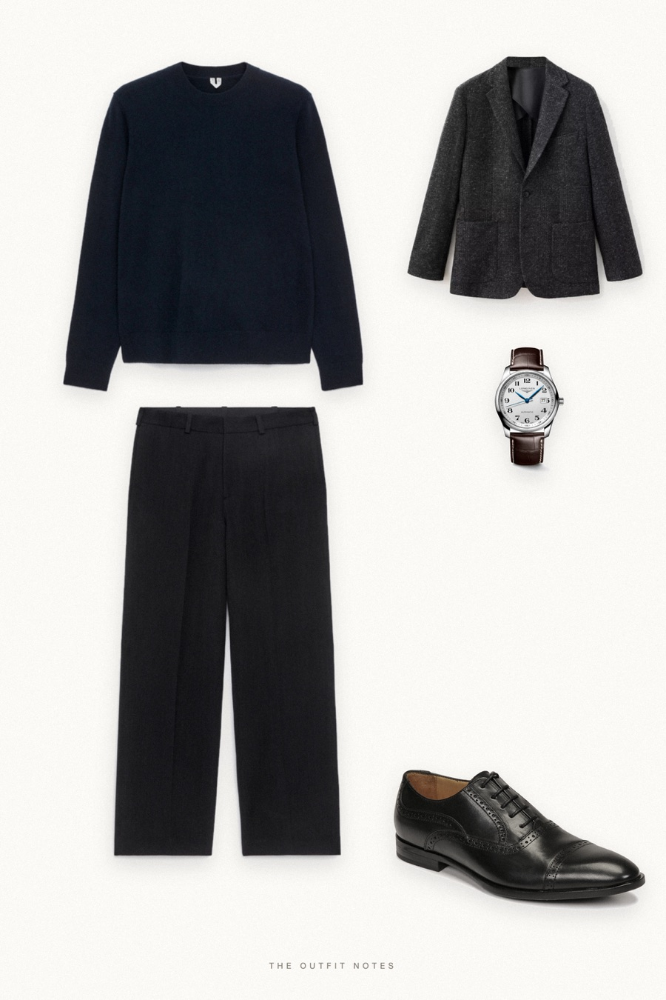
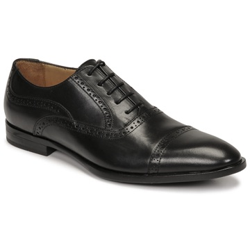

Charcoal Row
soft tailoring, navy cashmere

Quiet luxury menswear for fall in London: a Mango slim charcoal wool jacket over an ARKET pure cashmere navy crew-neck jumper, ARKET loose fit charcoal wool trousers and Pellet Alex black calf richelieus. A Longines Master Collection watch adds understated credibility. Tonal, sharp, office-ready.
The pieces
This page contains affiliate links: if you buy through them, we may earn a commission at no extra cost to you. Disclosure.
 Mango
Mango
Charcoal slim wool blazer
Shop ARKET
ARKET
Navy cashmere crewneck
Shop ARKET
ARKET
Charcoal loose wool trousers
Shop
Pellet
Black calf oxfords
Shop Longines
Longines
Silver dial dress watch
Shop
Prices are indicative, taken when the look was published, and may have changed. Pictures of the outfit are AI-generated illustrations of real products; the product photos are the retailers' own.
Published 1 October 2026.